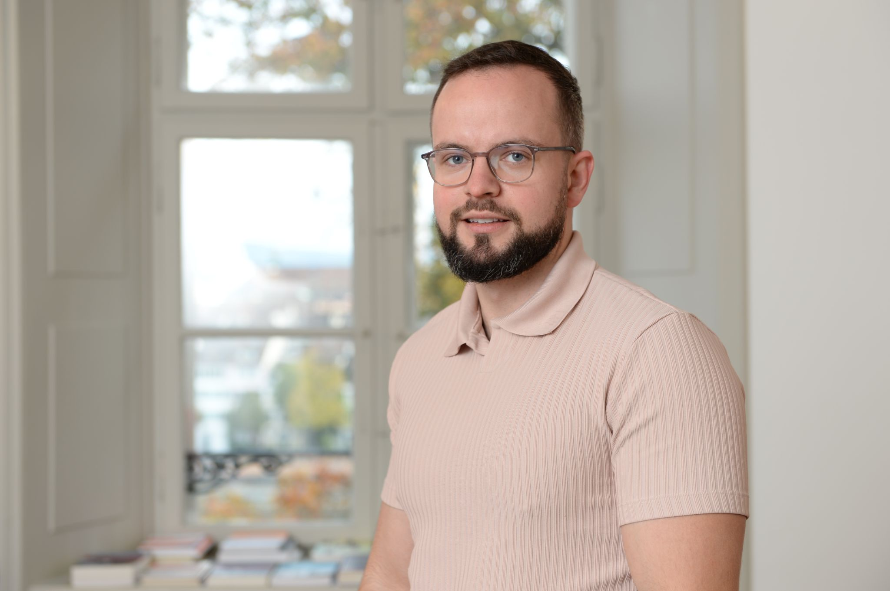

01
INCONEX · Text-as-data
Representative absence
Measuring who is — and who is not — present in legislative speech across Austria, Germany, Spain, and the European Parliament.
Political Scientist · SCEUS, Salzburg
I am a postdoctoral researcher in the INCONEX ERC project at the Salzburg Centre of European Union Studies, measuring representative absence in political speech across Austria, Germany, Spain, and the European Parliament.

About
My name is Clint Claessen. I am a postdoctoral researcher in the INCONEX ERC project at the Salzburg Centre of European Union Studies (SCEUS). My work is focused on measuring representative absence in political speech in Austria, Germany, Spain and the European Parliament. Additionally, I am interested in party leaders and political careers. To study these topics, I use sequence analysis, machine learning and text analysis tools.
I am also part of the Text-As-Data Reading Group and the monthly Political Career Enthusiasts meeting.
Before moving to Salzburg, I was a PhD student in the Institute of Political Science at the University of Basel. Earlier, I obtained a Master of Science in Teacher Training Social Studies from the University of Amsterdam and a Master of Arts in Comparative and International Studies from ETH Zurich. In the Netherlands, I worked as a high school teacher at the Huizermaat. In Zurich and later in Basel, I worked as a Research Assistant to Prof. Stefanie Bailer, mainly on the Parliamentary Careers in Comparison (PCC) project.
Research focus
Measuring who is — and who is not — present in legislative speech across Austria, Germany, Spain, and the European Parliament.
Examining how political experience and career capital shape the survival, selection, and visibility of party leaders.
Tracing trajectories before and after parliamentary mandates — including the much-debated revolving door between politics and business.
Sequence analysis, machine learning, and quantitative text analysis — including images-as-data approaches to political communication.
Contact